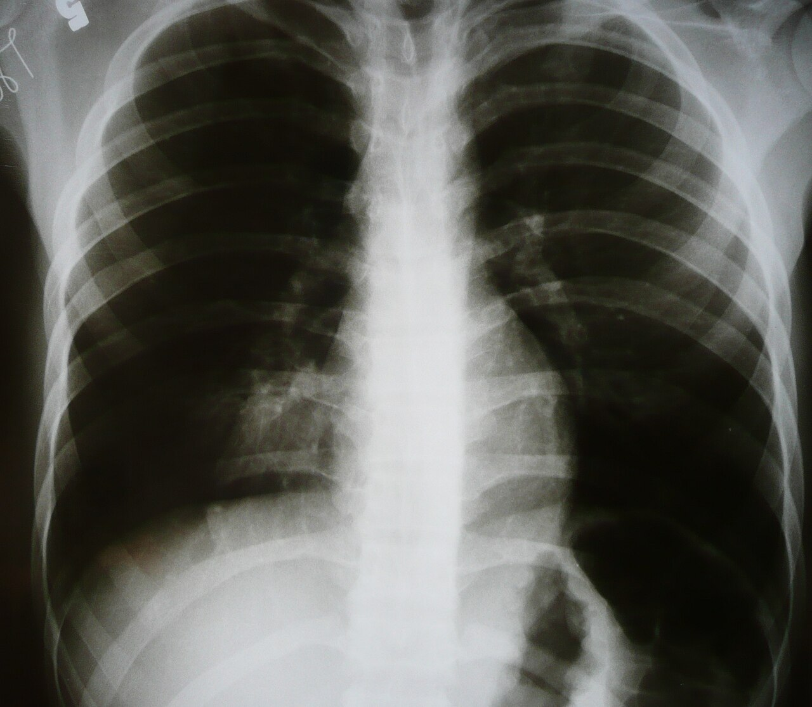

Ficha del catálogo
Neumonía redonda
- Sistema
- Respiratorio
- Modalidad
- RX
- Región
- Tórax
- Dificultad
- Básico
Consolidación infecciosa de morfología esférica que aparece sobre todo en niños pequeños, en quienes las vías colaterales de ventilación aún no están desarrolladas y la infección queda contenida en una forma redondeada. El agente más frecuente es el neumococo. Su importancia radica en que simula una masa y puede desencadenar estudios innecesarios si no se conoce.
Técnica
Radiografía de tórax posteroanterior y lateral, con especial atención a la localización y a los bordes de la lesión.
Qué observar
- Opacidad redondeada única de bordes relativamente bien definidos
- Localización preferente en los lóbulos inferiores y en situación posterior
- Broncograma aéreo en su interior, dato que orienta a consolidación
- Ausencia de calcificación, de grasa y de destrucción costal adyacente
- Contexto clínico de fiebre y tos de comienzo agudo
- Resolución completa en la radiografía de control tras el tratamiento
Hallazgos
Opacidad esférica de varios centímetros con broncograma aéreo, en un niño febril y sin otros hallazgos torácicos.
Perlas
La combinación de edad pediátrica, fiebre y broncograma aéreo dentro de una opacidad redondeada hace innecesaria la tomografía. Basta con tratar y repetir la radiografía para confirmar que desaparece.
Diagnóstico diferencial
- Masa pulmonar
- Persiste o crece en el control y suele carecer de broncograma.
- Secuestro pulmonar
- Lesión basal persistente con arteria nutricia de origen sistémico.
- Malformación de la vía aérea pulmonar
- Contiene quistes y se detecta desde etapas muy tempranas.
Simuladores
- Sombra mamaria o pezón proyectados sobre el pulmón
- Lesión de partes blandas de la pared torácica
- Derrame cisural encapsulado
Por modalidad
- RX
- Suficiente para el diagnóstico y para confirmar la resolución
- TC
- Se reserva para los casos que no se resuelven con tratamiento
Protocolo
Proyecciones frontal y lateral, con radiografía de control a las pocas semanas de terminado el tratamiento.
Clasificación
Errores frecuentes
- Solicitar tomografía de entrada en un cuadro claramente infeccioso
- No pedir la radiografía de control y dejar sin confirmar la resolución
- Etiquetar como tumor una consolidación redondeada en un niño febril

neumonia redonda pediatria consolidacion broncograma aereo seudotumor